12 OI Reference¶
12.1 Navigation¶
The Depositor OI presents information across three regions: a fixed header at the top, a fixed navigation bar at the bottom, and a main screen area that changes based on the selected button. The header and navigation bar remain visible on every screen.
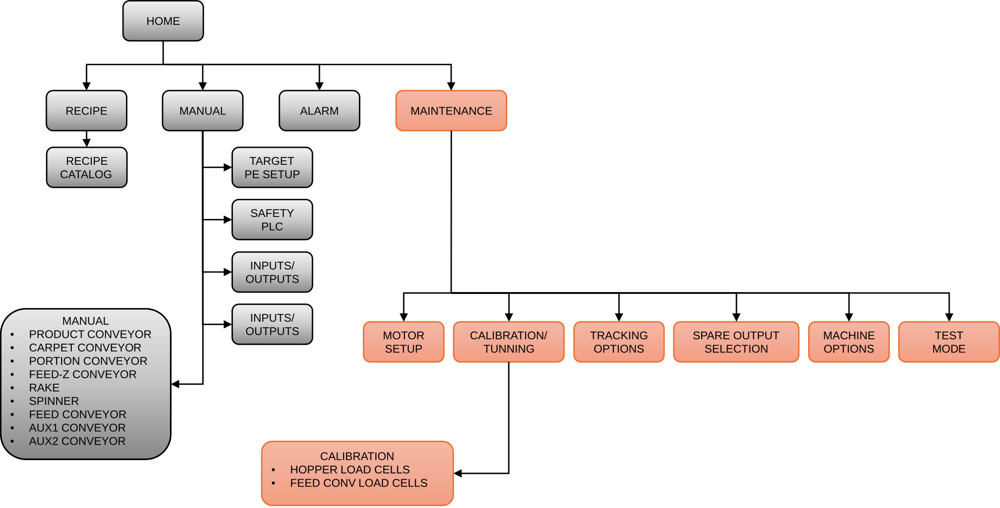
Note
Items shown in gray are accessible to all operators (DEFAULT login). Items shown in orange require a Maintenance login (GROTE). See Section 12.6: MAINT Screen.
12.1a Header¶
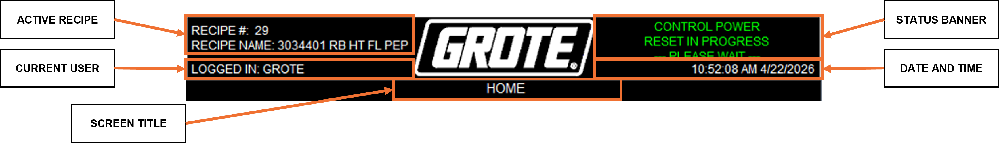
| Display | Description |
|---|---|
| ACTIVE RECIPE | Recipe number and name currently loaded. |
| CURRENT USER | Active login level. |
| STATUS BANNER | Banner reflecting the current Depositor state. See Section 12.9: Depositor Status Banner. |
| DATE AND TIME | Current system date and time. |
| SCREEN TITLE | Text identifying the currently active screen. |
12.1b Navigation Bar¶
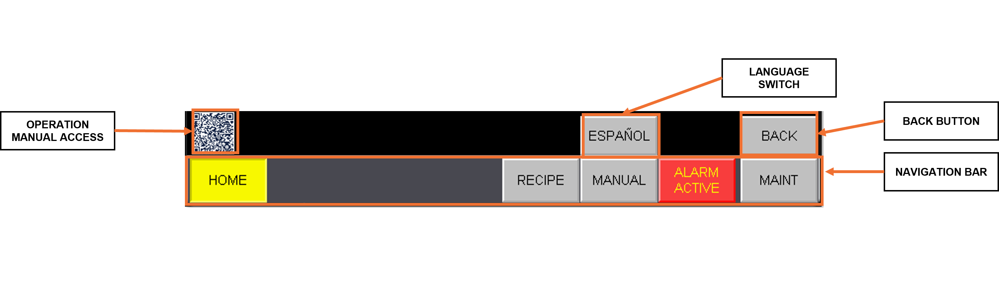
| Control | Description |
|---|---|
| HOME | Navigates to the Home screen. |
| RECIPE | Navigates to the Recipe screen. |
| MANUAL | Navigates to the Manual screen. |
| ALARMS | Navigates to the Alarms screen. |
| MAINT | Navigates to the Maintenance screen. |
| LANGUAGE SWITCH | Toggles the OI language between English and Spanish. |
| BACK | Returns to the previous screen. |
Note
The active screen button turns yellow.
The ALARM ACTIVE button flashes red when any alarm is present and returns to normal when all alarms are cleared.
12.2 HOME Screen¶
The HOME screen is the primary operating screen. It provides Depositor start and stop controls, operating mode selection, target delay fine-tuning, and machine statistics. See Section 4: Operating Modes and Section 6.3: Target Tracking.
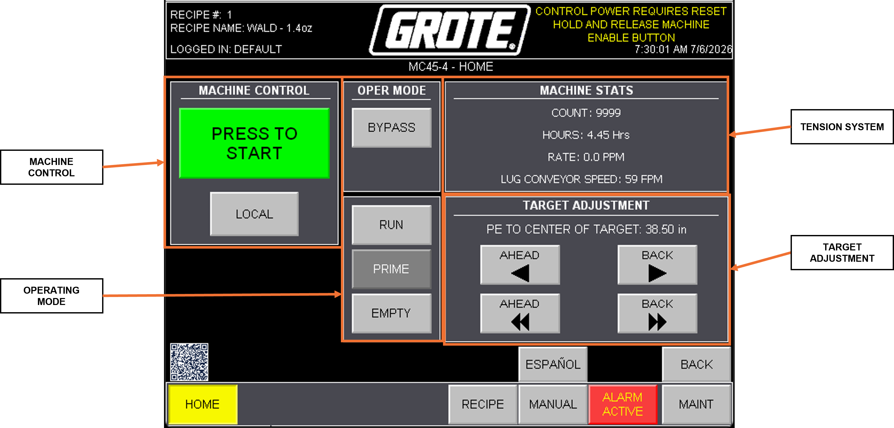
| Group | Description |
|---|---|
| MACHINE CONTROL | This group contains the START and STOP buttons for the selected operating mode, and the LOCAL / REMOTE control source selection. See Section 3: Startup. |
| OPERATING MODE | Selects the operating mode. See Section 4: Operating Modes. |
| TARGET DELAY ADJUST | FINE and COARSE buttons adjust TARGET DELAY in the active recipe. See Section 6.3. |
| TARGET COUNT | Number of targets processed. |
| HOURS OF OPERATION | Total run time. |
| MACHINE RATE | Current production rate. |
| CONVEYOR SPEED | PRODUCT CONVEYOR speed. |
Note
To reset the statistics, use RESET HISTORY on the MAINT screen. See Section 12.11: MACHINE OPTIONS Reference.
12.3 RECIPE Screen¶
The RECIPE screen provides recipe management. Editable fields have a yellow outline with green text. See Section 5: Recipe Setup and Appendix A: Recipe Starting Points.
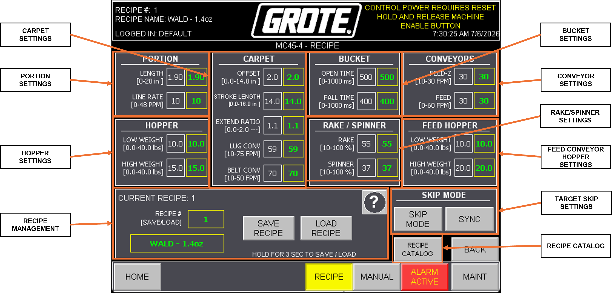
| Group | Description |
|---|---|
| PORTION SETTINGS | PORTION CONVEYOR move and timing setpoints. See Section 5.1. |
| HOPPER SETTINGS | HOPPER weight thresholds. See Section 5.1. |
| CARPET SETTINGS | CARPET travel and timing setpoints. See Section 5.1. |
| BUCKET SETTINGS | BUCKET timing setpoints. See Section 5.1. |
| RAKE/SPINNER SETTINGS | RAKE and SPINNER speed setpoints. See Section 5.1. |
| CONVEYOR SPEED SETTINGS | PRODUCT CONVEYOR speed setpoint. See Section 5.1. |
| FEED HOPPER SETTINGS (Optional) | FEED CONVEYOR weight thresholds. See Section 5.1. |
| SKIP MODE (Optional) | Enables or disables Skip Mode. SYNC shifts the skip phase by one target. See Section 5.3. |
| RECIPE MANAGEMENT | Load and save recipes. See Section 5.2. |
12.4 MANUAL Screen¶
The MANUAL screen provides manual controls for the SOLENOID and STACKLIGHT, navigation to the conveyor and motor manual controls, the TARGET PHOTO EYE remote teach functions, SAFETY PLC, the I/O display, and WIPEDOWN.
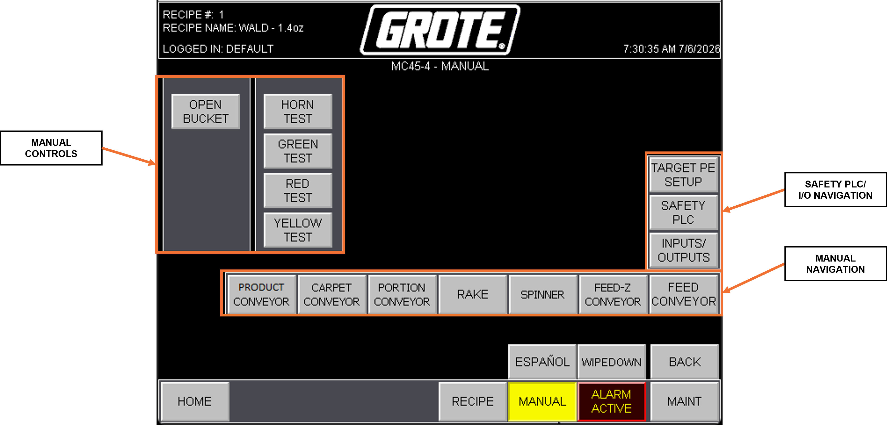
| Group | Description |
|---|---|
| VFD DRIVES | PRODUCT CONVEYOR, RAKE, and SPINNER. FEED-Z, AUX 1, and AUX 2 (Optional). Manual control, current, and last fault per drive. |
| SERVO DRIVES | CARPET, PORTION CONVEYOR, and FEED CONVEYOR (bidirectional, Optional). JOG, fault info, current, position, and status (READY, FAULTED, HOMED) per drive. |
| TARGET PHOTO EYE REMOTE TEACH | Navigation to the TARGET PHOTO EYE remote teach screen. |
| SAFETY PLC | Navigation to the SAFETY PLC screen. |
| I/O STATUS | Navigation to the I/O STATUS screen. |
| BUCKET | Manual toggle for the BUCKET solenoid. |
| STACKLIGHT | Manual toggle for the STACKLIGHT. See Section 12.10: STACKLIGHT Reference. |
| WIPEDOWN | Opens a blank screen with no active buttons. |
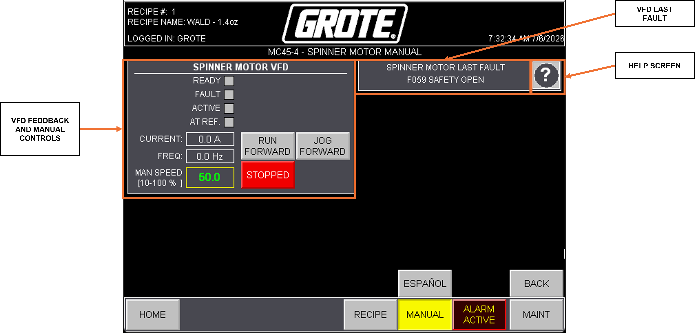
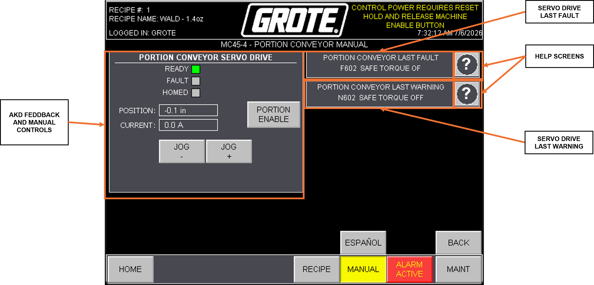
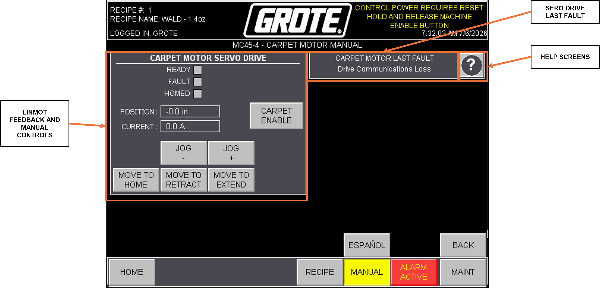
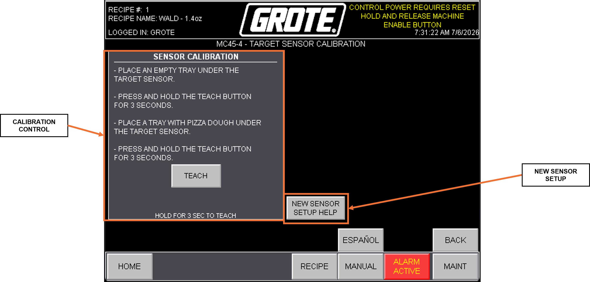
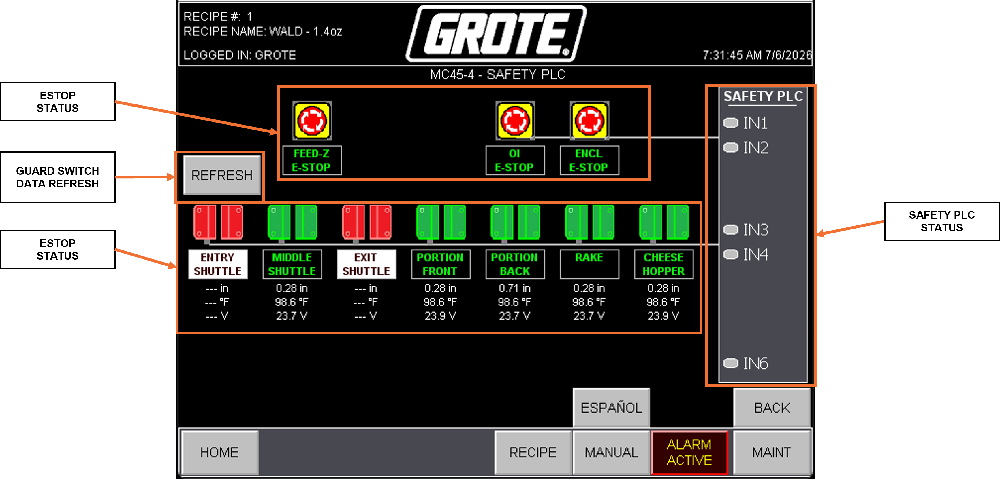
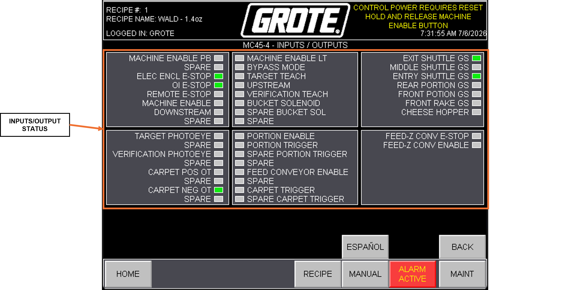
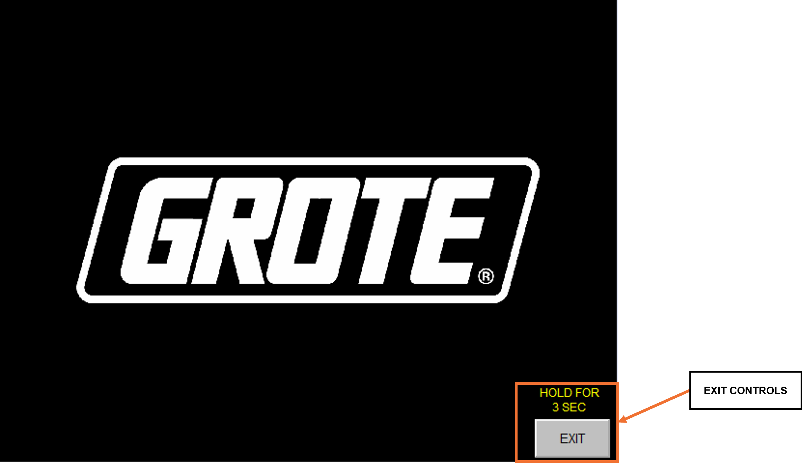
12.5 ALARMS Screen¶
The ALARMS screen logs active and historical alarm events. For fault descriptions and corrective actions, see Section 13: Troubleshooting.
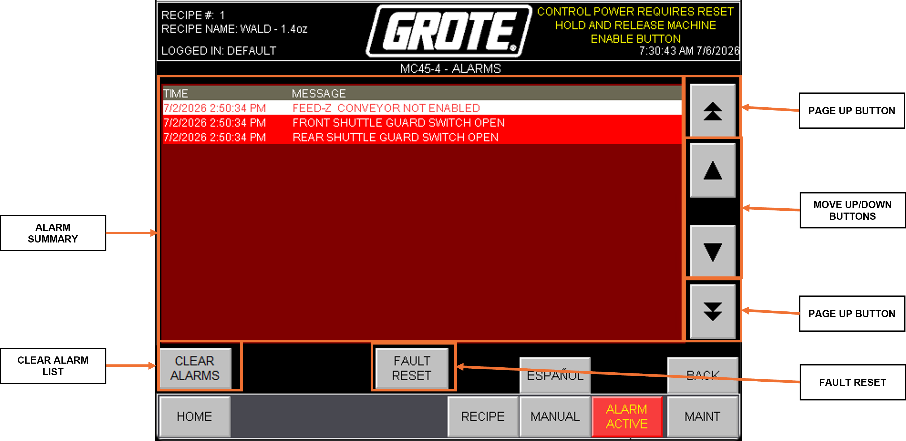
| Group | Description |
|---|---|
| ALARM SUMMARY | Timestamped list of alarm events. |
| CLEAR ALARM LIST | Clears the alarms in the alarm banner. |
| FAULT RESET | Resets latched system faults. |
| UP/DOWN BUTTONS | Alarm banner up/down navigation. |
Note
| State | Appearance |
|---|---|
| Active | Red background, white text. |
| Inactive | White background, black text. |
| Selected | White background, red text. |
12.6 MAINT Screen¶
The MAINT screen provides access to drive configuration, calibration, and system settings. A GROTE login is required to access this screen.
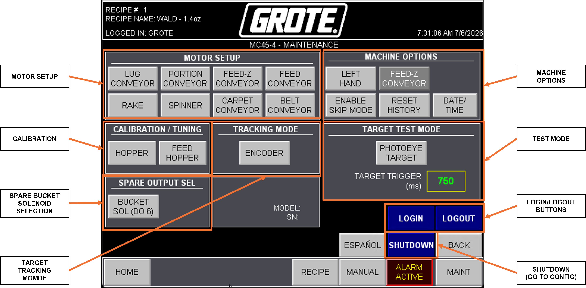
| Group | Description |
|---|---|
| MOTOR SETUP | Drive scaling and limit configuration. See Section 12.7: Motor Setup Screens. |
| CALIBRATIONS | Load cell calibration. See Section 12.8: Calibration Screens. |
| MACHINE OPTIONS | Depositor-wide configuration. See Section 12.11: MACHINE OPTIONS Reference. |
| TRACKING MODE | Selects Time-Based or Encoder-Based target tracking. See Section 6.3: Target Tracking. |
| SPARE OUTPUT SELECTION | Redirects a failed output to a spare terminal. If a primary output fails, the operator selects the spare output on this screen, then moves the field wire from the failed terminal to the spare terminal per the electrical schematic. |
| TARGET TEST MODE | Runs the deposit cycle automatically without a TARGET SENSOR input. |
| LOGIN/LOGOUT | User login and logout controls. |
12.7 Motor Setup Screens¶
Each drive has a dedicated Motor Setup screen, reached from MAINT → MOTOR SETUP → [drive name].
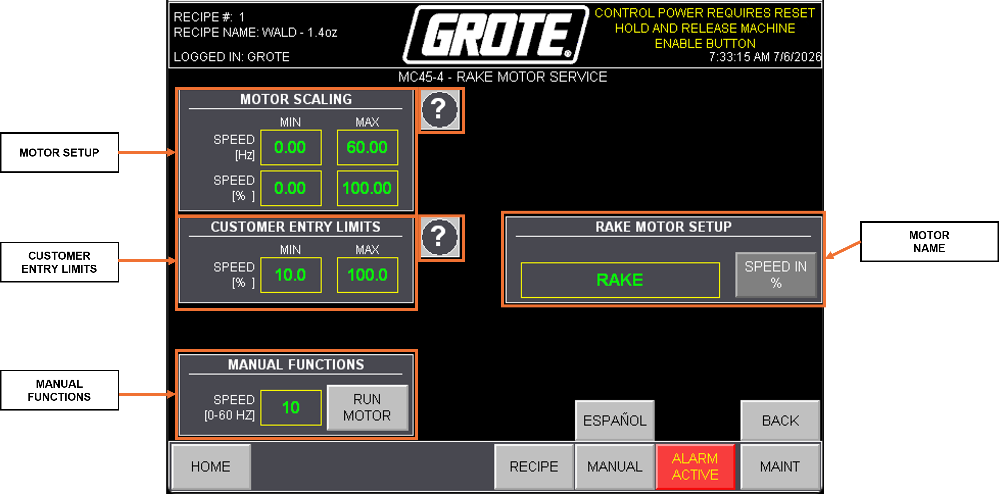
All Motor Setup screens for the VFD drives share the following fields:
| Group | Description |
|---|---|
| MOTOR SCALING | Sets MIN and MAX operating speed. |
| CUSTOMER ENTRY LIMITS | Sets the MIN and MAX speed values operators can enter. |
| MANUAL FUNCTIONS | Manual drive control. Enter speed in Hz and press RUN FORWARD. |
Note
These fields apply to the PRODUCT CONVEYOR, AUX 1 CONVEYOR, AUX 2 CONVEYOR (Optional), RAKE, SPINNER, and FEED-Z CONVEYOR (Optional).
See Section 7: Motor Speed Scaling for scaling calculations.
PORTION CONVEYOR / FEED CONVEYOR¶
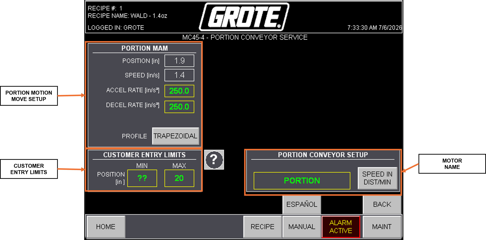
The PORTION CONVEYOR and FEED CONVEYOR (Optional) Motor Setup fields are documented in Section 8: Kollmorgen Servo Setup.
CARPET¶
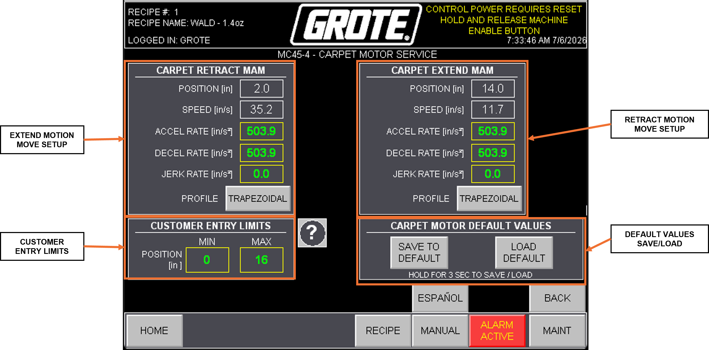
The CARPET Motor Setup fields are documented in Section 9: Linmot Servo Setup.
12.8 Calibration Screens¶
See Section 10: Load Cell Calibration for step-by-step procedures.
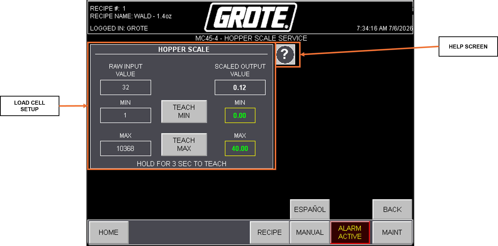
| Group | Description |
|---|---|
| LOAD CELL SETUP | Captures MIN and MAX calibration points. See Section 10. |
12.9 Depositor Status Banner¶
The Depositor Status Banner appears at the top of every screen to communicate the current Depositor state. For mode-by-mode behavior, see Section 4: Operating Modes.
| Banner Message | Color | Condition |
|---|---|---|
| MACHINE FAULTED GO TO ALARMS SCREEN |
RED | Active fault. Navigate to the ALARMS screen and press FAULT RESET after correcting all conditions. |
| MACHINE READY HOLD START |
GREEN | Depositor ready to start. Hold PRESS TO START. |
| MACHINE RUNNING | GREEN | Depositor running in RUN mode. |
| CONTROL POWER REQUIRES RESET HOLD AND RELEASE MACHINE ENABLE BUTTON |
YELLOW | Control power requires reset. Hold and release the MACHINE ENABLE button. |
| MACHINE RUNNING RECIPE VALUES CHANGED, PLEASE SAVE RECIPE |
YELLOW | The active recipe has unsaved changes. Save the recipe from the RECIPE screen. |
| BYPASS MODE READY HOLD START |
GREEN | BYPASS mode selected and ready. Hold PRESS TO START. |
| MACHINE RUNNING REMOTE CONTROL ACTIVE |
GREEN | Depositor running under REMOTE control. |
| FEED-Z NOT ENABLED | RED | FEED-Z CONVEYOR is not enabled. |
| MACHINE RUNNING BYPASS MODE |
GREEN | Depositor running in BYPASS mode. |
| MACHINE RUNNING IN RUN MODE | GREEN | Depositor running in RUN mode. |
| MACHINE RUNNING IN EMPTY MODE | GREEN | Depositor running in EMPTY mode. |
| MACHINE RUNNING IN PRIME MODE | GREEN | Depositor running in PRIME mode. |
| CARPET HOMING IN PROGRESS | YELLOW | CARPET homing in progress. |
12.10 STACKLIGHT Reference¶
The STACKLIGHT provides an at-a-glance Depositor status visible from across the production floor. See Section 2: Equipment Overview or Appendix B: Glossary.
| Indicator | State | Meaning |
|---|---|---|
| HORN | Pulsing | Depositor starting |
| RED | Blinking | Not enabled |
| RED | Solid | Faulted |
| YELLOW | Blinking | Low topping level |
| YELLOW | Solid | Topping level empty |
| GREEN | Blinking | Ready to run |
| GREEN | Solid | Running |
12.11 MACHINE OPTIONS Reference¶
MACHINE OPTIONS sets Depositor-wide configuration. A GROTE login is required.
Toggle Options¶
| Option | Function | Default |
|---|---|---|
| LEFT-RIGHT HAND | Sets the Depositor's feed orientation. Depends on the flow of the machine. | LEFT HAND |
| FEED-Z / NO FEED-Z | Enables or disables the FEED-Z CONVEYOR option. | NO FEED-Z |
| SKIP MODE ENABLE / DISABLE | Enables or disables Skip Mode. | DISABLE |
System Settings¶
| Setting | Description |
|---|---|
| RESET HISTORY | Resets the statistics counter on the HOME screen. |
| DATE/TIME | Sets the system clock. |